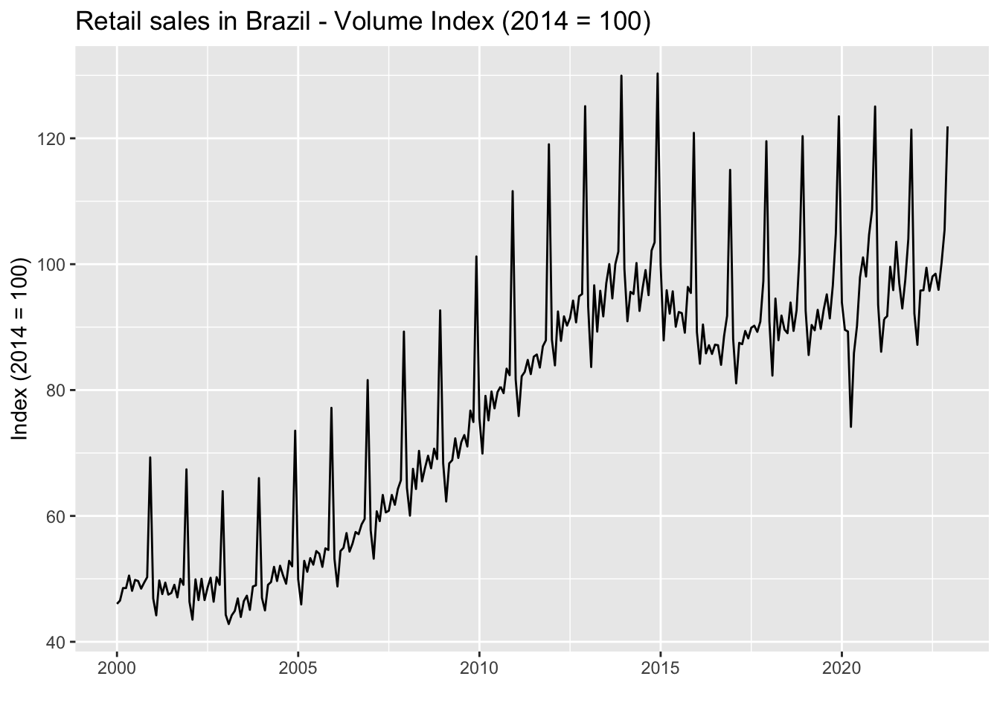
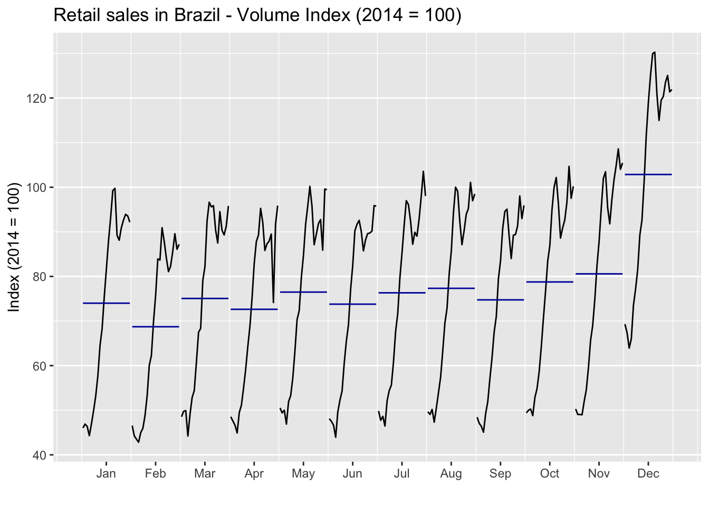
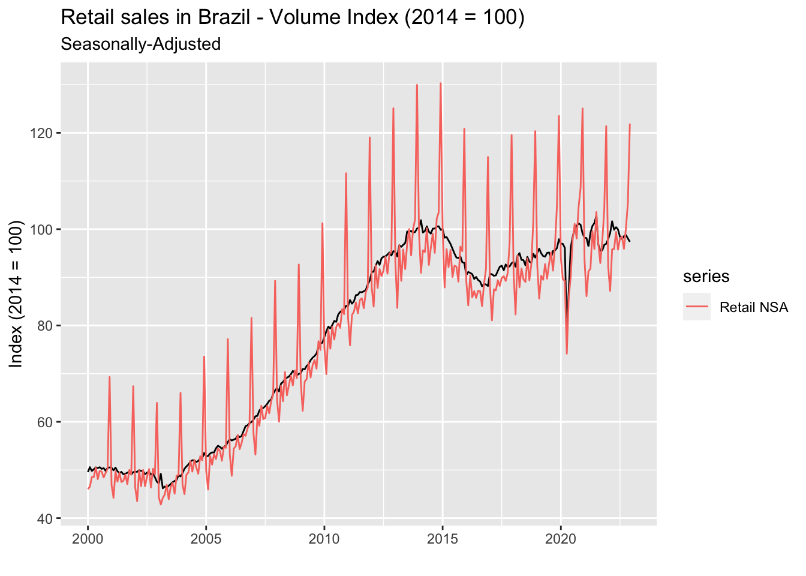
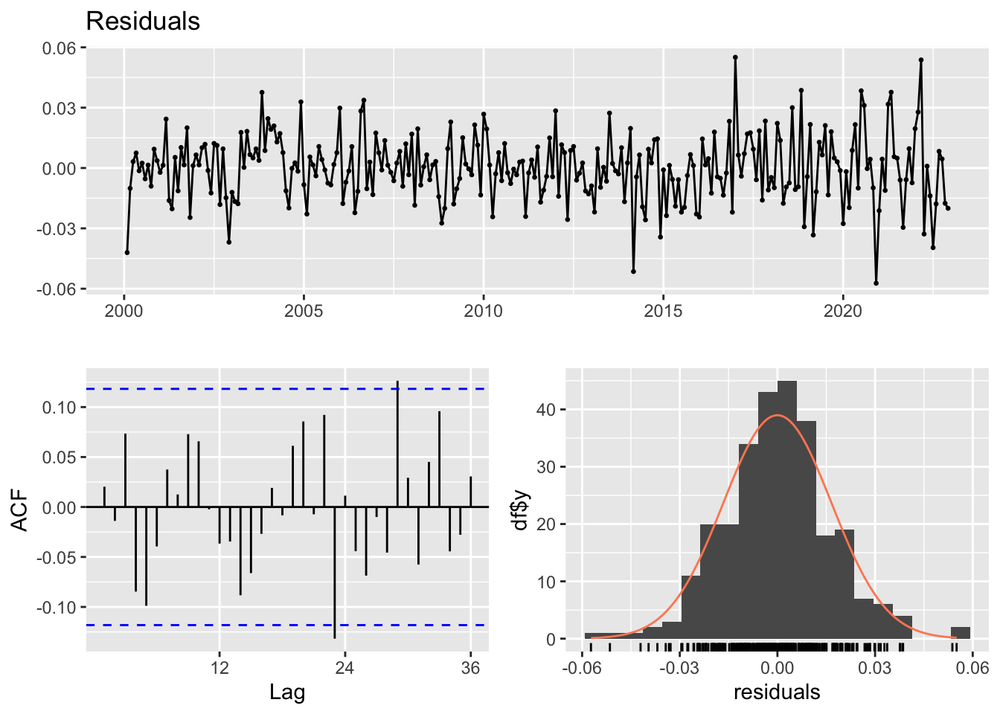
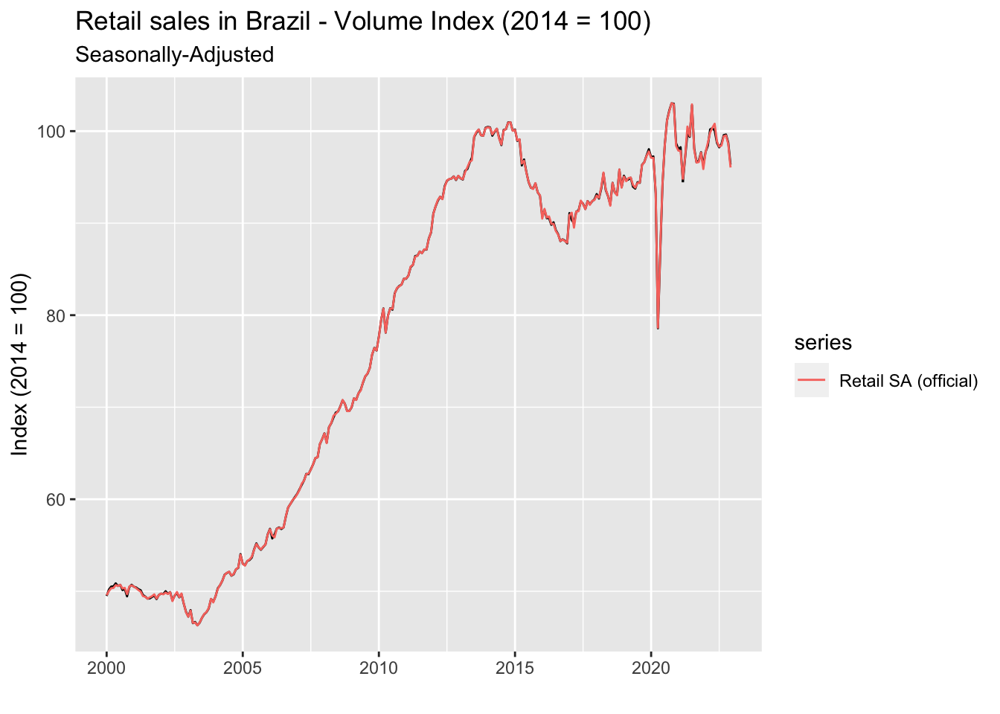

4 Seasonal adjustment
Seasonality is commonly defined as the expected fluctuation in time series data that occurs within a regular frequency not exceeding a one-year-period. For instance, temperatures are higher in the summer months and lower in the winter months. These fluctuations often create difficulties for the correct identification of trends in data. For example, it doesn’t help to know that the average temperature increased in July compared to June. The relevant information is how much did the average temperature exceed the historical pattern for this period. Therefore, in most applications with time series it’s mandatory to remove the seasonal component before carrying out any further analysis.
There are some methods available for seasonal adjustment, X-13-ARIMA from the US Census Bureau being the most used. Roughly speaking, it makes use of a standard ARIMA model with external regressors accounting for outliers, permanent shifts, holidays and so on. The Seasonal Adjustment Q&A section of the Census website provides details on how the tool works, as well as useful information on the practice of seasonal adjustment. It’s worth giving it a read.
In the following sections we’ll see how to identify and remove the seasonal pattern from Brazilian Retail Sales data (PMC provided by IBGE, the Brazilian official bureau of statistics) using X-13-ARIMA.
4.0.1 Spotting a seasonal pattern
It’s very common for time series to show a seasonal pattern strong enough that it’s possible to identify it simply by visual inspection. The data on Brazilian Retail Sales is an example of this, as we can clearly see the regularly spaced peaks throughout the sample.

Sometimes, however, the mix of trends and random noise may hinder our ability to spot the seasonal pattern. In these cases, we can resort to some tools. For example, the ggmonthplot function from the forecast package is a nice shortcut to build a plot where the data are grouped by period and so we can get a better sense of whether values are typically higher or lower for an specific period.
pmc_ts_nsa %>%
ggmonthplot() +
labs(
title = 'Retail sales in Brazil - Volume Index (2014 = 100)',
x = '',
y = 'Index (2014 = 100)'
)
As the graph makes clear, we can expect values on December to be, on average, higher than any other month. This is obviously related to year-end sales, as you might suspect. Another great tool we can employ to discover a seasonal pattern is the mstl function from the same package. Remember it decomposes the time series into its structural components, the seasonal pattern being one of them.
pmc_ts_nsa %>%
mstl() %>%
autoplot() +
labs(
title = 'Retail sales in Brazil - Volume Index (2014 = 100)',
x = '',
y = 'Index (2014 = 100)'
)
Breaking down the time series into its components has a clear advantage over the previous tool, since it provides additional information about each of these components. In this case, we can notice that the seasonal component has became larger as of 2010. In addition, we can see that the large one-off shock in retail sales due to COVID-19 in March of 2020 was mostly identified as random noise rather than contaminating the other components.
4.0.2 Removing the seasonal pattern
X-13-ARIMA is available for R users through the seasonal package. In order to make it as simple as possible, the function seas can automatically select the model that fits the data best. Therefore, we can perform seasonal adjustment without any specific knowledge. Notice that the seas function will return the model selected for seasonal adjustment. We should next call the final function to get the seasonally adjusted values.
library(seasonal)
pmc_sa_autox13 <- seas(pmc_ts_nsa)
pmc_sa_autox13 %>%
final() %>%
autoplot() +
autolayer(pmc_ts_nsa, series = 'Retail NSA') +
labs(
title = 'Retail sales in Brazil - Volume Index (2014 = 100)',
subtitle = 'Seasonally-Adjusted',
x = '',
y = 'Index (2014 = 100)'
)It did a good job of getting rid of those peaks in December – and possibly other undesirable hidden stuff. We can use any of those tools we’ve learned in the previous section to check that there’s no seasonality left in the data.
pmc_sa_autox13 %>%
final() %>%
ggmonthplot() +
labs(
title = 'Retail sales in Brazil - Volume Index (2014 = 100)',
subtitle = 'Seasonally-Adjusted',
x = '',
y = 'Index (2014 = 100)'
)
It looks pretty good! Remember that no seasonal treatment is perfect and the goal is always to have no apparent seasonality in the data. In this case, we could safely make meaningful comparisons between periods. To finish, it’s worth mentioning that we can assess relevant information about the selected model using standard methods for lm objects. For example, information on the estimated parameters are available through the summary function, while the checkresiduals function from the forecast package can be used to check the properties of the residuals (or directly perform any test based on model residuals using the residuals function).
pmc_sa_autox13 %>%
summary()
pmc_sa_autox13 %>%
forecast::checkresiduals()4.0.3 Moving to a custom specification
Sometimes we just can’t rely on the automatic model selection. Either because we would like to incorporate additional features not available in the function – special moving holidays is a common issue – or because we need to replicate the seasonal adjustment provided by the source or any other third-party. For instance, IBGE releases its own seasonally-adjusted retail sales data. So if we were to analyze or forecast seasonally-adjusted data using IBGE releases as our target, we would have to invariably adopt its specification.
Let’s first compare the automatic seasonal adjustment we computed in the previous section with the official seasonally-adjusted series provided by IBGE.
Code
pmc_sa_ibge <-
pmc_tidy %>%
dplyr::filter(var == 'retail_sa') %>%
dplyr::pull(value) %>%
ts(start = c(2000,1), frequency = 12)
pmc_sa_autox13 %>%
final() %>%
autoplot() +
autolayer(pmc_sa_ibge, series = 'Retail Sales SA (official)') +
labs(
title = 'Retail sales in Brazil - Volume Index (2014 = 100)',
subtitle = 'Seasonally-Adjusted',
x = '',
y = 'Index (2014 = 100)'
)
We can see that for most of the sample our automatic version follows closely the official’s, but it clearly goes off track right after the COVID shock in early 2000’s. Fortunately, IBGE describes the model specification it uses for the seasonal adjustment of this series in a technical note. Some relevant information are:
- The model specification is SARIMA(0,1,1)(0,1,1);
- It incorporates Carnival and Corpus Christi – two important moving holidays in Brazil – in the model besides the usual trading days and Easter; and
- It also includes two level shifts – April 2020 and December 2020 – and a temporary change – April 2020. The latter arguably to cope with the effects of the COVID shock.
How can we add these features to the seasonal adjustment model? Starting with the moving holidays, we need to create a vector with the dates of the holidays. However, for some holidays it might be well that their effect may extend beyond the day on which they occur. Carnival in Brazil is a good example. Even though the holiday happens on a Tuesday, the celebration starts on Monday and ends on Wednesday. Hence, it’s very important to include these two extra days in the input vector. The genhol function makes this task much simpler: it automatically extend our date vector by including a number of earlier and/or later dates defined by the offsetting parameters start and end. Since Carnival and Corpus Christi occur, respectively, 47 and 60 days after Easter we can build the associated vectors from the latter – the seasonal package has built-in dates for Easter inside the easter vector. Otherwise, we would have to build them by ourselves (or import it from somewhere).
Level shifts and temporary changes can easily be incorporated using textual shortcuts in the regression.variables parameter. For level shifts we use lsYEAR.MONTH, whereas for transitory changes we use tcYEAR.MONTH. More information on the parameters can be found in the X-13-ARIMA Reference Manual.
Below we can see the full specification for the custom model intended to replicate IBGE’s along with the resulting plot.
library(lubridate)
carnival <- easter %m-% days(47)
corpus_christi <- easter %m+% days(60)
carnival_holiday <- seasonal::genhol(
carnival,
start = -1,
end = 1,
frequency = 12,
center = 'calendar'
)
corpus_christi_holiday <- seasonal::genhol(
corpus_christi,
frequency = 12,
center = 'calendar'
)
pmc_sa_customx13 <- seas(
x = pmc_ts_nsa,
regression.variables = c(
"td", "easter[1]", "ls2020.apr", "tc2020.apr", "ls2020.dec"
),
xreg = ts.union(carnival_holiday, corpus_christi_holiday),
regression.usertype = "holiday",
arima.model = "(0 1 1)(0 1 1)",
regression.aictest = NULL,
outlier = NULL,
transform.function = "log",
x11 = ""
)
pmc_sa_customx13 %>%
final() %>%
autoplot() +
autolayer(pmc_sa_ibge, series = 'Retail SA (official)') +
labs(
title = 'Retail sales in Brazil - Volume Index (2014 = 100)',
subtitle = 'Seasonally-Adjusted',
x = '',
y = 'Index (2014 = 100)'
)The new specification produced an almost perfect match with the official seasonally-adjusted data, specially for the post-COVID period. Some deviations are arguably due to slight differences in the holiday vector, but for now we’ll consider the goal achieved.